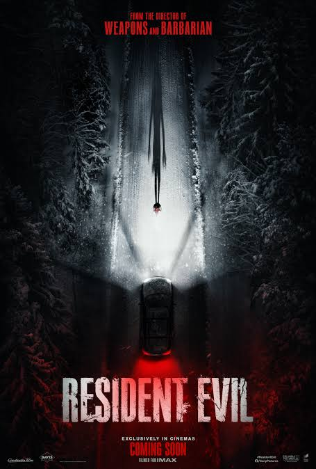

Minha melhor amiga
Minha Melhor Amiga acompanha Júlia e Clara, duas amigas de 50 anos que decidem viajar para a Europa após se despedirem de suas filhas em intercâmbio em Portugal. O que era para ser férias perfeitas vira uma série de perrengues e situações divertidas que saem completamente do roteiro

Resident evil
A sinopse do novo filme de Resident Evil (2026) acompanha Bryan (Austin Abrams), um entregador médico comum que precisa fazer uma entrega noturna em um hospital remoto. Preso em meio a um violento surto viral, ele enfrenta uma noite caótica repleta de criaturas mutantes
Cara de barro
acompanha a decadência e a transformação de Matt Hagen, um promissor ator de Hollywood que tem o rosto brutalmente desfigurado e se transforma em um monstro de argila em busca de vingança

Street fighter
acompanha os lutadores Ryu e Ken Masters sendo recrutados por Chun-Li para o World Warrior Tournament, onde descobrem uma conspiração mortal.